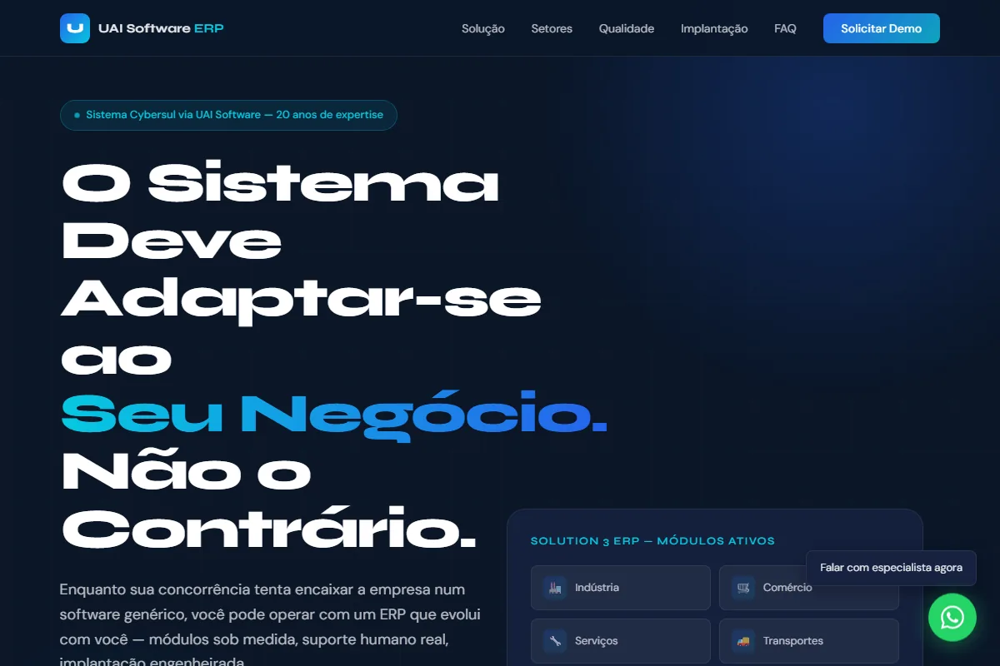
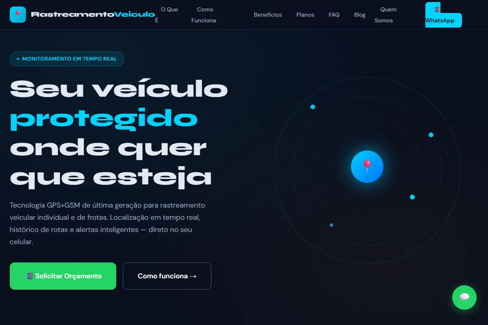
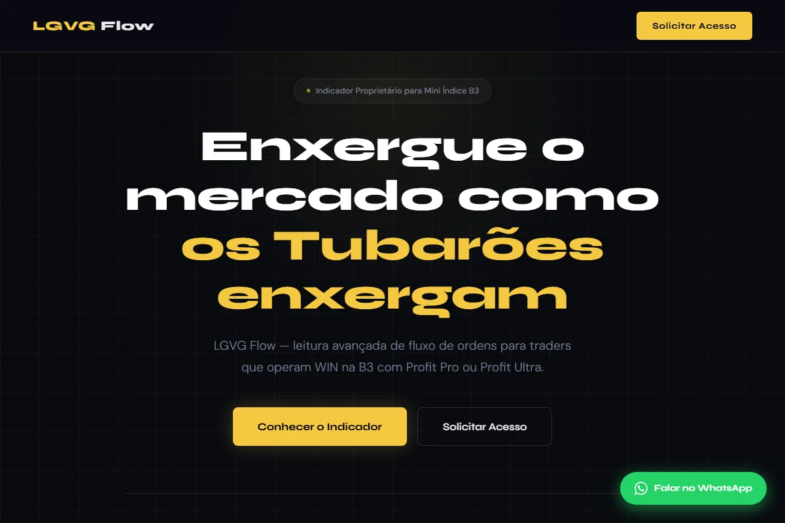

Demora para carregar
O visitante perde a paciência antes de conhecer sua empresa.
Sites, landing pages e estratégia digital para empresas
Criamos e otimizamos sites, landing pages e estratégias digitais para empresas que querem transmitir mais confiança, aparecer no Google e transformar visitas em oportunidades comerciais.
Diagnóstico inicial sem custo, sem compromisso e entregue em até 24 horas úteis.
Diagnóstico objetivoGargalos e melhorias prioritárias em até 24 horas úteis.
Sinais que merecem atenção
Nem sempre o problema é falta de visitas. Muitas vezes, a oportunidade chega ao site e encontra barreiras para confiar, navegar ou entrar em contato.
O visitante perde a paciência antes de conhecer sua empresa.
Um visual desatualizado reduz a percepção de confiança.
Informações importantes ficam difíceis de encontrar.
Textos, menus e botões atrapalham o contato em telas menores.
Avisos do navegador e formulários frágeis afastam clientes.
O visitante entende a empresa, mas não sabe qual passo dar.
A estrutura dificulta a indexação e reduz oportunidades orgânicas.
Visitas acontecem, mas os contatos não acompanham o investimento.
Cada um desses problemas pode representar contatos, oportunidades e vendas sendo perdidos todos os dias.
Quero minha análise gratuitaTecnologia com função comercial
Seu site precisa sustentar o posicionamento da empresa e trabalhar todos os dias para gerar confiança, contatos e oportunidades.
Design profissional e comunicação clara para que o visitante entenda rapidamente por que confiar na sua empresa.
Páginas rápidas, responsivas e fáceis de navegar para reduzir desistências em qualquer dispositivo.
Arquitetura, textos, formulários e CTAs planejados para transformar interesse em conversa comercial.
SEO técnico, integrações e proteção em uma estrutura preparada para acompanhar o crescimento da empresa.
Auditoria Express Gratuita
Antes de propor qualquer projeto, analisamos o cenário atual e mostramos onde estão os principais gargalos.
Precisamos apenas dos dados essenciais para iniciar a análise.
Avaliamos performance, mobile, SEO, segurança, credibilidade e conversão.
Apresentamos os gargalos e as melhorias prioritárias, sem linguagem técnica desnecessária.
Preencha quatro campos. Nossa equipe entra em contato para confirmar o diagnóstico.
Soluções organizadas por resultado
Integramos atração, conversão e estrutura para evitar ações digitais isoladas que não sustentam o crescimento.
01
Ajudar sua empresa a ser encontrada pelas pessoas certas.
02
Transformar mais visitas em contatos e oportunidades comerciais.
03
Reduzir tarefas manuais, riscos e gargalos operacionais.
Capacidade aplicada
Estruturas criadas para apresentar ofertas com clareza, facilitar contatos e apoiar a operação de empresas em diferentes segmentos.

Desafio: organizar uma oferta de gestão com muitos módulos. Solução: hotsite com narrativa comercial, setores atendidos e captação de demonstrações.
Visualizar projetoDesafio: comunicar uma solução empresarial complexa com clareza. Solução: arquitetura orientada a problema, benefícios e demonstração comercial.
Visualizar projeto
Desafio: apresentar segurança e monitoramento de forma simples. Solução: proposta direta, planos organizados e contato via WhatsApp.
Visualizar projeto
Desafio: apresentar uma solução especializada para um público específico. Solução: mensagem objetiva, demonstração de valor e CTA direto.
Visualizar projetoAnálise de SEO on-page, experiência e estrutura de conversão com recomendações organizadas por prioridade.
Solicitar projeto semelhanteAnálise da página de planos e das chamadas para ação para reduzir atrito na captação de contatos.
Solicitar projeto semelhanteComparativo estratégico
Relatos de atendimento
Nomes parcialmente abreviados conforme a autorização de cada cliente.
“Profissionalismo do início ao fim. O site novo passou confiança imediata para os nossos clientes e o formulário de contato começou a gerar leads na primeira semana.”
“A auditoria que recebi foi direta ao ponto. Identificaram problemas que eu nem sabia que existiam. Rápido, técnico e sem enrolação.”
“Entregaram a landing page dentro do prazo e com uma qualidade visual muito acima do que eu esperava. Já está convertendo.”
Primeiro entender, depois decidir
A auditoria ajuda a identificar se o site precisa ser corrigido, otimizado, parcialmente reformulado ou reconstruído. A decisão vem depois do diagnóstico.
Quero minha análise gratuitaTalvez não precise. Primeiro avaliamos o que pode ser aproveitado e quais ajustes trariam maior impacto.
O diagnóstico reduz essa incerteza ao mostrar prioridades e evitar investimentos em mudanças que não resolvem o problema principal.
O processo começa com escopo, prioridades e próximos passos claros. Você entende a recomendação antes de decidir.
Você não precisa entender. Traduzimos questões técnicas em impacto para credibilidade, atendimento e vendas.
As recomendações podem ser organizadas por prioridade e executadas por etapas, conforme o momento da empresa.
Esses canais são importantes. O site fortalece a credibilidade, organiza a oferta, ajuda no Google e cria uma base que a empresa controla.
Conteúdo para decisões melhores
Materiais objetivos sobre performance, segurança, SEO, landing pages e automação.
Veja causas comuns de lentidão e como elas afetam experiência, Google e geração de contatos.
Ler matériaConheça os pontos avaliados em HTTPS, scripts, formulários e possíveis exposições.
Ler matériaIndexação, estrutura, velocidade e links internos explicados de forma prática.
Ler matériaPerguntas frequentes
Não encontrou sua dúvida? Fale diretamente com um especialista.
Falar pelo WhatsAppO investimento depende do objetivo, do escopo e das integrações necessárias. A auditoria inicial ajuda a definir prioridades antes de qualquer proposta, sem compromisso de contratação.
O prazo varia conforme o escopo e a disponibilidade dos materiais. Após o diagnóstico e o briefing, apresentamos um cronograma claro para aprovação.
Sim. O atendimento é online por WhatsApp, e-mail e videochamada para empresas em todo o Brasil.
Você envia o endereço do site e seus dados de contato. Um especialista avalia performance, mobile, SEO, segurança, credibilidade e conversão, e apresenta os principais gargalos em até 24 horas úteis.
Depende do estado atual. A auditoria identifica se o melhor caminho é corrigir, otimizar, reformular parcialmente ou reconstruir o site.
Sim. A estrutura e os textos podem ser desenvolvidos com foco em clareza, posicionamento, SEO e conversão, sempre com validação da empresa.
Sim. Os projetos são planejados para celulares, tablets e computadores, com atenção a leitura, navegação, velocidade e área de toque.
Sim. Podemos estruturar o site para busca orgânica e integrar landing pages, mensuração e campanhas no Google.
Sim. Botões, formulários e fluxos podem direcionar o contato para o WhatsApp de forma simples e mensurável.
Sim. Oferecemos manutenção, correções, monitoramento e evolução contínua conforme a necessidade do projeto.
Os dados enviados são usados para responder à solicitação, realizar o diagnóstico e dar continuidade ao atendimento. Eles não são comercializados. Consulte a Política de Privacidade.
O próximo passo é simples
Solicite uma análise gratuita e descubra quais melhorias podem transformar seu site em um canal real de geração de oportunidades.
Gratuito · Sem compromisso · Resposta em até 24 horas úteis